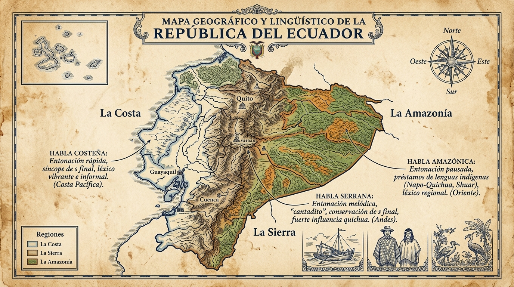

VARIEDADES LINGÜÍSTICAS
Msc. Alejandro Córdova
En el Ecuador, un país pluricultural y multilingüe, conviven el español, lenguas ancestrales y múltiples formas locales de hablar. La lengua se transforma según la región, el contexto, la historia de contacto y los grupos sociales.
¿Qué son las Variedades Lingüísticas?
Son las distintas formas en que una comunidad o una persona usa una lengua. Todas las variedades tienen reglas y permiten comunicar; lo que cambia es su adecuación a la situación y el prestigio que la sociedad les atribuye. La variedad estándar sirve para ciertos contextos institucionales, pero no es lingüísticamente superior a las demás.
- Dinamismo de la lengua: El idioma no es estático; evoluciona constantemente por el contacto cultural y las migraciones.
- Factores de variación: Geográficos (dónde se habla), situacionales (en qué contexto) y sociales (con qué grupo).
Variar no es “hablar mal”
Una comunidad puede preferir una norma para escribir documentos oficiales o enseñar en la escuela. Esa convención facilita la comunicación en determinados ámbitos, pero no autoriza a ridiculizar una variedad familiar, regional, indígena o juvenil.
- Adecuación: una forma es eficaz cuando responde al propósito, al interlocutor, al canal y a la situación.
- Prejuicio lingüístico: juzgar la inteligencia de una persona por su acento confunde diferencia lingüística con capacidad.
- Observación ética: al documentar una variedad, registra quién habla, dónde y con qué intención; no inventes equivalencias ni imites rasgos para burlarte.
Reto 1: Fundamentos de la Variación Lingüística
Resuelve las preguntas para registrar tus primeros puntos en la barra lateral
Variedades Geográficas (Dialectos)
Modificaciones del idioma condicionadas por la región territorial
En el Ecuador pueden reconocerse tendencias regionales —costeñas, andinas, amazónicas y de las zonas insulares—, pero las fronteras no son rígidas: las personas cambian su manera de hablar según su historia, movilidad, comunidad y propósito. El léxico, la pronunciación, la entonación y la gramática pueden variar sin que eso convierta una forma en “incorrecta”.

Reto 2: Clasificación de Modismos Regionales
Identifica la procedencia regional de cada expresión ecuatoriana
Registros del Habla: Formal vs. Coloquial
Adecuamos nuestra manera de hablar según la situación comunicativa, la relación de confianza con el interlocutor y el canal empleado.
Registro Formal
Se utiliza en exposiciones académicas, entrevistas de trabajo o trámites institucionales. Vocabulario preciso, sintaxis cuidada y tratamiento de cortesía (usted).
Registro Coloquial / Informal
Se emplea en la vida cotidiana con amigos y familia. Espontáneo, expresivo, con modismos locales y mayor relajación articulatoria.
Reto 3: Reconocimiento de Registros
Identifica la adecuación del registro lingüístico
Las Jergas y Tecnolectos
Vocabularios especializados adoptados por grupos específicos para identificarse entre sí o comunicar conceptos técnicos con exactitud:
Jergas Profesionales (Tecnolectos)
Médicos: cefalea (dolor de cabeza), nosocomio (hospital).
Abogados: jurisprudencia, litigio, foja.
Jergas Juveniles (Cronolectos)
Términos identitarios y dinámicos: random (aleatorio), cringe (vergüenza ajena), chiro (sin dinero), acolitar (ayudar).
Reto 4: Jergas y Tecnolectos
Identifica la función y significado de las jergas
Reporte de Calificación
Has concluido la exploración de las Variedades Lingüísticas del Ecuador y sus 4 Retos Formativos intercalados.